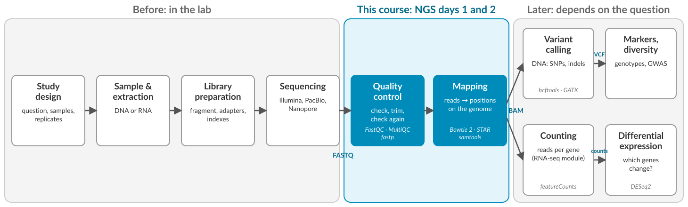
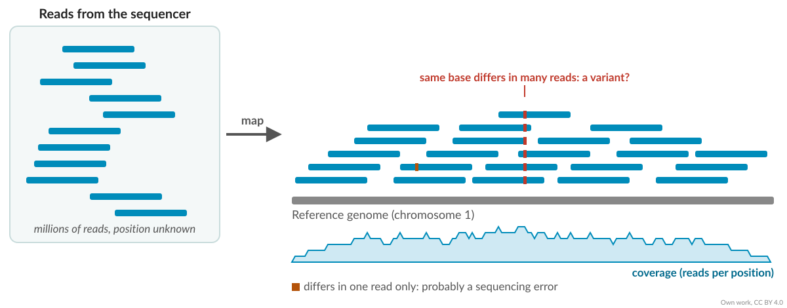
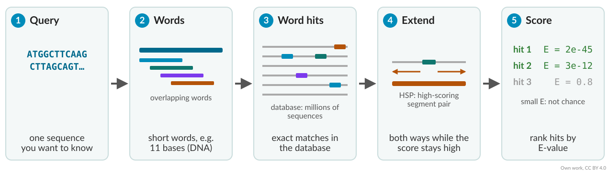
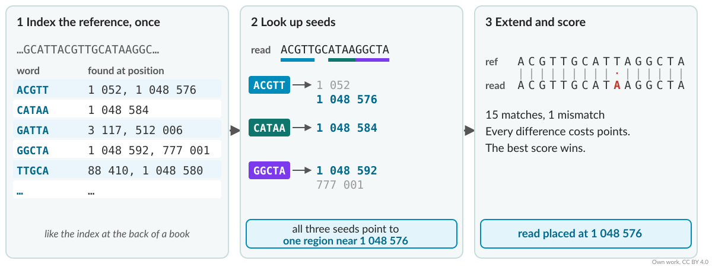
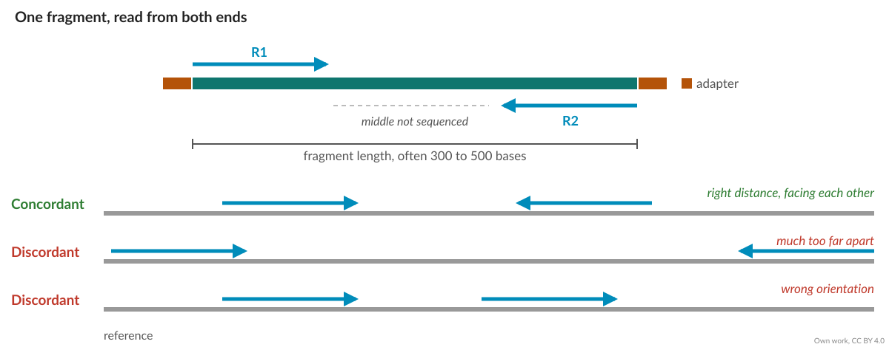
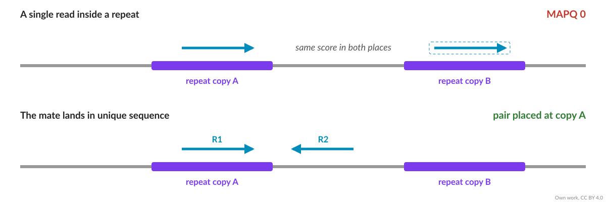
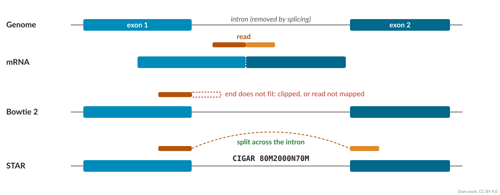
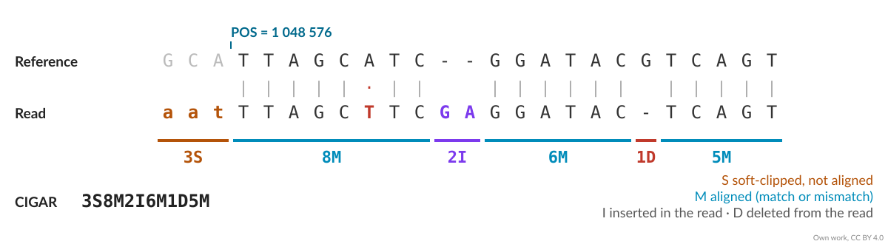

Mapping sequencing reads
Introduction to Bioinformatics · NGS day 2
This lecture
- Mapping and BLAST: what they do, and how they differ
- Alignments: mismatches, gaps, pairs and repeats
- RNA: reads across splice junctions
- SAM files and mapping statistics
- The exercises
Where we are in the workflow

What is mapping?
From reads to positions
After sequencing we have millions of short reads, and we don’t know where any of them came from.
Mapping finds, for each read, the place in a reference where it fits best.
- Reference genome: the assembled chromosomes of the species
- Reference transcriptome: the sequences of all known transcripts
Once reads have a position we can count them per gene, look for variants, or check coverage.
Many reads, one reference

Mapping in a picture

Read 1: two mismatches. Read 2: local alignment, both ends clipped. Read 3: a 2-base insertion and a 1-base deletion. Figure: Galaxy Training Network
BLAST: searching for similar sequences
BLAST
Basic Local Alignment Search Tool (Altschul et al., 1990)
- One sequence, the query, against a large database (for example NCBI nt, or all proteins)
- Finds similar sequences, not only identical ones, also in other species
- Answers: what is this sequence?
| Program | Query | Database |
|---|---|---|
| blastn | DNA | DNA |
| blastp | protein | protein |
| blastx | DNA, translated | protein |
| tblastn | protein | DNA, translated |
How BLAST works

Seed and extend: look for short exact matches first, then align only around them.
Reading a BLAST hit
| Column | Meaning |
|---|---|
| % identity | Share of identical positions in the alignment |
| Alignment length | How much of the query is aligned |
| Bit score | Alignment score, independent of the database size |
| E-value | Number of hits this good expected by chance in a database this size |
E-value: close to 0 (e.g. 1e-50) means the hit is very unlikely to be chance. Around 1 or above means it could easily be chance.
BLAST or a mapper?
| BLAST | Read mapper (Bowtie 2, STAR) | |
|---|---|---|
| Question | What is this sequence? | Where in this genome does it come from? |
| Queries | One or a few | Millions of reads |
| Database | Many species | One reference genome |
| Differences allowed | Many: finds distant relatives | Few: same or closely related species |
| Speed per sequence | Seconds | Microseconds |
Both seed and extend. Mappers make it fast by indexing one reference once, and by expecting the read to be almost identical to it.
Finding the place fast
Why not just search?
- 20 million read pairs × a genome of roughly 700 Mb (cassava)
- Comparing every read with every position: about 1016 comparisons
- Searching with BLAST would take weeks
Mappers first build an index of the reference, once. Then each read is looked up in the index, like a word in the index at the back of a book.
Index, seed, extend

Each mapper builds its own index format. A Bowtie 2 index cannot be used by STAR.
Alignments
What an alignment allows
| Difference | Why it happens |
|---|---|
| Mismatch | Sequencing error, or a real variant (SNP) |
| Insertion / deletion | Sequencing error (homopolymers), or a real indel |
| Soft clipping | Adapter left on the read, low-quality ends, structural variant |
Every difference costs points. The mapper reports the alignment with the best score.
End-to-end or local?
End-to-end: the whole read must align. Unaligned ends are penalised as mismatches.
Local: the ends may be clipped if they don’t fit. Good when reads still carry adapter or low-quality ends.
In Bowtie 2: --very-sensitive (end-to-end) vs --very-sensitive-local (local). You will try both.
Paired-end reads

A pair that maps as expected is concordant (Bowtie 2) or properly paired (samtools).
Reads that fit in many places
Genomes are full of repeats: transposons, gene families, duplicated regions.

- A read that fits equally well in several places is a multi-mapping read. The mapper picks one at random, or reports all of them.
- MAPQ (mapping quality) says how sure the mapper is: 0 means it could be anywhere.
Plant genomes are special
- Large and full of transposable elements: often more than half the genome
- Often polyploid: several copies of each chromosome, similar but not identical
- Often heterozygous: cassava is, so the two copies of a chromosome differ
Your cultivar is not the reference cultivar. Differences between them will look like mismatches to the mapper.
RNA
Reads across exons
In RNA-seq, reads come from spliced transcripts. Many reads span an exon-exon junction.

Splice-aware mappers
- STAR, HISAT2: allow a read to be split across an intron
- An annotation (GTF) tells them where known exons and junctions are
- They also find new junctions from the data
That is why STAR needs the .gtf file when it builds its index, and Bowtie 2 doesn’t.
Which mapper for which data?
| Data | Typical tools |
|---|---|
| DNA, short reads | Bowtie 2, BWA-MEM2 |
| RNA, short reads | STAR, HISAT2 |
| Long reads (DNA or RNA) | minimap2 |
| RNA, counts only | Salmon, kallisto (pseudo-alignment, no exact positions) |
The SAM format
SAM: one line per alignment
A header (lines starting with @), then 11 tab-separated columns per read:
| Column | Name | Example |
|---|---|---|
| 1 | Read name | read_123 |
| 2 | FLAG | 99 |
| 3 | Reference | Chromosome01 |
| 4 | Position | 1048576 |
| 5 | MAPQ | 42 |
| 6 | CIGAR | 5S70M |
| 7 to 9 | Mate: reference, position, fragment length | =, 1048790, 289 |
| 10, 11 | Sequence, qualities | ACGT…, FFF:… |
CIGAR: read alignment

In RNA-seq you will also see N: a skipped region, the intron (e.g. 80M2000N70M).
FLAG: yes/no answers in one number
FLAG is a sum. Each yes/no answer has its own value:
| Value | Meaning | In FLAG 99? |
|---|---|---|
| 1 | Read is paired | yes |
| 2 | Pair is properly paired | yes |
| 4 | Read is unmapped | |
| 16 | Read is on the reverse strand | |
| 32 | Mate is on the reverse strand | yes |
| 64 | First read of the pair (R1) | yes |
| 128 | Second read of the pair (R2) | |
| 256 | Not the primary alignment |
99 = 1 + 2 + 32 + 64. Decode any FLAG at broadinstitute.github.io/picard/explain-flags.html.
SAM, BAM and samtools
- SAM is text: readable, but large
- BAM is the compressed binary version of the same data
- samtools converts, sorts, indexes and summarises them
Mapping statistics
What does a good mapping look like?
| DNA, same species | RNA-seq | |
|---|---|---|
| Overall alignment rate | above 90 % | 70 to 90 % uniquely mapped |
| Properly paired | most pairs | most pairs |
| Multi-mapping | a few % | a few % to 10 % |
These are rules of thumb for a whole reference genome.
Unmapped reads
- Wrong or incomplete reference
- Contamination (bacteria, fungi, human)
- Adapters or poor quality left on the reads
- A divergent cultivar or species
- rRNA in RNA-seq
Important
In the exercise we map to chromosome 1 only. Cassava has 18 chromosomes. What mapping rate do you expect?
The exercises
You will
| Sample | Data | Mapper | Index needs |
|---|---|---|---|
| TMEB117 | DNA, paired-end | Bowtie 2 | chromosome01.fasta |
| TMEB419 | RNA, paired-end | STAR | chromosome01.fasta + .gtf |
- Build both indexes, map, read the logs
- Compare raw and trimmed reads, local and end-to-end
- Look inside the SAM file with samtools
Summary
- Mapping places each read on a reference, using an index to be fast
- BLAST finds similar sequences across species; mappers place millions of reads in one genome
- Alignments allow mismatches, gaps and clipping, each at a cost
- Pairs and MAPQ help with repeats; plant genomes have many
- RNA needs a splice-aware mapper such as STAR
- SAM/BAM stores the result; the log tells you if it worked

Mapping · Introduction to Bioinformatics